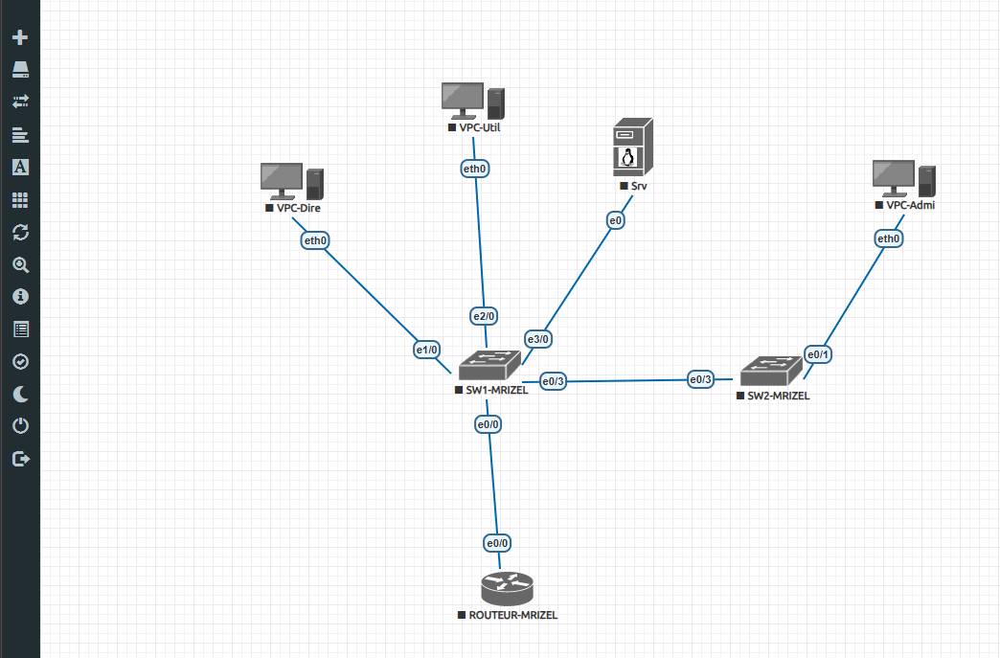
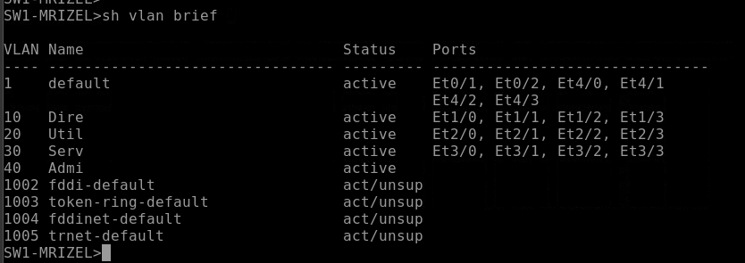
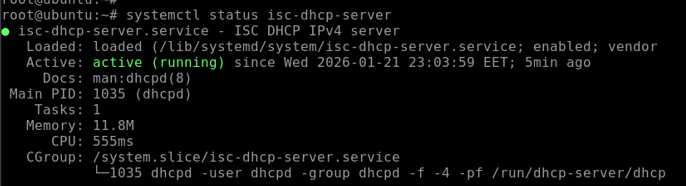

Conception et déploiement d'un LAN structuré sous EVE-NG avec segmentation VLAN, propagation VTP, serveur DHCP Linux Debian et routage inter-VLAN.



Cette SAÉ a été ma première mise en pratique concrète des notions de segmentation réseau vues en cours. Passer de la théorie des VLANs à leur configuration réelle sur un switch Cisco en CLI, puis les faire fonctionner avec un DHCP Linux et un routage inter-VLAN opérationnel — c'est une progression que j'ai vraiment sentie.
SAÉ 1.02 was a network infrastructure project focused on designing and deploying a structured LAN for a simulated enterprise environment using EVE-NG. The architecture included multiple VLANs (Management, Employees, Guest Wi-Fi), VTP for automatic VLAN propagation across switches, a Linux Debian DHCP server providing dynamic IP allocation per VLAN, and inter-VLAN routing using a Router-on-a-Stick configuration with Cisco IOS.
This project developed my practical skills in Cisco CLI configuration, network segmentation, Linux service administration, and network troubleshooting — all core competencies of the RT1 track (Administering Networks and the Internet) in the BUT Réseaux & Télécommunications program.